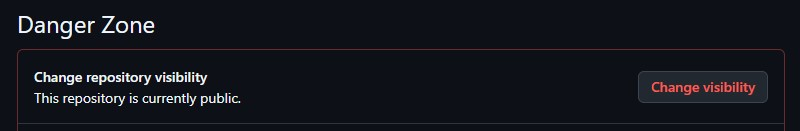
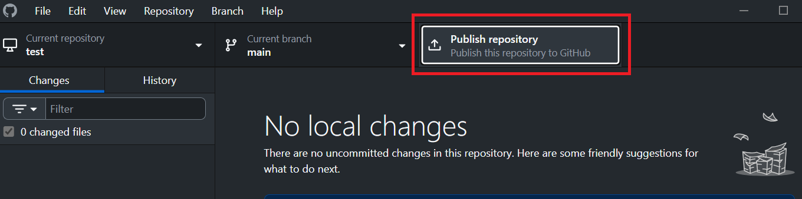
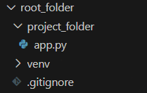

Chapter 0: Getting Started¶
How to read this manual¶
This handbook provides you with the specific instructions for this project. Because there is such a large number of groups, we cannot allow you to be creative here. You are required to follow these guidelines that make it easier for us to grade your work.
This handbook will teach you everything you need to know to complete the project. You should be familiar with most of it from previous courses.
Between instructions and code snippets you will encounter two types of boxes in this manual.
Important instructions and frequent mistakes
Be aware of these.
Optional insights
Read them if you want to learn more.
Installing required software¶
Follow these steps to install the software that you will need in every assignment. You only need to do this once.
Installing Python¶
Python is the programming language that you will primarily use in this class.
On Windows¶
- Open the Microsoft Store app on your computer.
- Search for "Python" and open the latest version.
- Click "Install".
- Verify installation by opening Command Prompt and typing:
python --version.
If this does not work, install Python manually
- Visit python.org/downloads/.
- Download the latest version for Windows.
- IMPORTANT: During installation, check the box that says 'Add Python to PATH'.
- Click 'Install Now' and wait for installation to complete.
'Python is not recognized' on Windows means that Python was not added to PATH.
Reinstall Python following the alternative steps in the box above and make sure to click 'Add Python to PATH'.
On Mac¶
- Visit python.org/downloads/.
- Download the latest version for macOS.
- Double-click the downloaded
.pkgfile. - Follow the installation wizard.
- Verify installation by opening Terminal and typing:
python3 --version.
On Mac, you will always type python3 instead of python
Installing Visual Studio Code¶
Visual Studio Code is the integrated developer environment that you will use for this class.
- Download the installer from code.visualstudio.com.
- Install the application on your computer.
- Install the official Microsoft Python extension for Visual Studio code from the extensions marketplace.
Installing GitHub Desktop¶
You will use Git for version management and GitHub for code sharing, collaboration, and deployment.
What is the difference between Git and GitHub?
Git is a local version control system for tracking code changes, while GitHub is one of several cloud platforms that hosts code repositories and add collaboration features. Git comes with the installation of the GitHub Desktop client.
- Download GitHub Desktop from desktop.github.com.
- Install the application on your computer.
- If you do not yet have a GitHub account with your ASU email, create one at github.com.
- Open the GitHub Desktop and sign in with your GitHub account.
Setting up your development environment¶
These are the steps you will repeat for each assignment to set up your project environment.
Creating the project folder structure¶
You can create a new folder and navigate to it by typing the following into the Windows command prompt or Mac terminal:
mkdirstands for "make directory",assignment_01can be whatever you want the folder to be named.cdstands for "change directory", you have to put the same folder name here as you did in the first line.
Working in virtual environments¶
A virtual environment is an isolated Python environment that keeps your project's dependencies separate from other projects. This is essential because different projects may require different versions of the same package. Think of it as a container that holds all the specific tools your project needs without affecting other projects on your computer
Why use virtual environments?
- Keeps project dependencies isolated
- Prevents version conflicts between projects
- Makes it easy to share your project with others
- Allows you to replicate the exact environment on different machine
Creating a virtual environment¶
This command creates a new folder called 'venv' containing a complete Python environment.
- Remember to use
python3instead ofpythonif you are on a Mac. -mstands for "module" and means that the next parameter is the name of the module that will be executed- The first
venvis the "virtual environment" module. - The second
venvcan be whatever you want to name your environment.
'Permission denied' Error on Mac
Use sudo python3 -m venv venv.
Activating the virtual environment¶
Before installing any packages or running your app, you have to always activate the virtual environment in the terminal that you are using. If you close your terminal, you have to activate your virtual environment again when you reopen the terminal. Keep your terminal open and your virtual environment activated while working on your project.
- on Windows:
venv\Scripts\activate - on Mac:
source venv/bin/activate
Confirm that the venv is active
If the activation was successful, you will now see (venv) at the beginning of your command line. If you get an error message, read it carefull. You might be in the wrong directory or have a type in the command.
When you are done working in the environment, you can deactivate it by typing deactivate.
Installing required packages¶
You will need to install some packages for each assignment. Install packages with the python package manager pip.
On Mac, always use pip3 instead of pip!
Replace package-name with whatever package you want to install
Only install packages while your virtual environment is active!
How to verify your package installation
You can verify that your installation worked by listing all installed packages with pip list. This will likely show more than just the one you installed because a package might install its dependencies as well. For example, installing Flask (which we will introduce in the next chapter) automatically installs dependencies such as Wekzeug and Jinja.
You can usually find documentation and example snippets for these packages at pypi.org.
Version control with git¶
Git allows you to easily trace, synchronize, and revert your changes. Set up a new repository for every project/assignment.
To create a new repository in GitHub Desktop:
- Click “File”, then "New repository".
- Select your project folder.
- Publish your repository (see screenshot below) and make sure you remove the ckeckmark for "make this code private".
Why and how to make the repository public
The graders will need access to your code, and this will simplify the deployment to AWS at the end of the project.
If you have accidentally created a private repository, you can still change its visibility later. Do not delete the repository because this might delete your commit history as well. Instead, go to your repository on GitHub by clicking "Repository" -> "View on GitHub" at the top of GitHub Desktop. Then go to "Settings" and scroll to the bottom. There you can change the visibility to "public":


If someone on your team has already created and uploaded the shared repository (see below), click 'Clone repository' instead of 'New repository'.
Whenever you make changes to your code, you will see them listed in GitHub Desktop. When you want to create a snapshot of your current state, you need to commit your changes. In GitHub Desktop,
- Write a clear, descriptive commit message (e.g., "Add user login functionality" instead of "updates").
- Click "Commit to main" to save the snapshot locally
- Click "Push origin" to upload your snapshot to the shared GitHub repository.
If there are any files that you do not want to upload to GitHub, then create a .gitignore file in the repository folder (i.e., your project folder). There, enter the name of the folders and files you want to exclude, one per line.
To add collaborators:
- Go to your repository on github.com.
- Click "Settings" and then "Manage access".
- Click "Invite a collaborator".
- Enter their GitHub username and send the invitation.
During this class, only one team member can work at a time. Carefully follow the workflow below.
Your workflow in group projects during the class will be:
- One member creates the repository and pushes the initial code.
- The next team member pulls the latest version of the code after the first one is done.
- This second team member continues the work and commits changes.
- The third team member waits until the second one has pushed the final version of their work.
This is a very valuable skill to learn!
Git and GitHub are used in almost all software development jobs. Use this project as an opportunity to become familiar with them.
Final folder structure¶
Your projects are required to have the folder structure below!
You can rename the folders (e.g., assignment_01 instead of root_folder or my_app instead of project_folder). This manual will continue to refer to these as root and project folder.
root_folder/ # (1)!
├── venv/
└── project_folder/ # (2)!
├── .gitignore # (3)!
└── Your code goes here (e.g., 'app.py')
- The root folder contains everything related to your project.
- The project folder contains the code of your project and the git repository.
- The
.gitignorefile is only needed if you want to exclude files when pushing your code to GitHub.
Understanding this folder structure notation
We are going to use the above notation for folder structures throughout this manual. Each line is a file (if it includes a .) or a folder. A folder contains all the elements that are directly below it and further indented. The above structure would look as follows in Windows:
